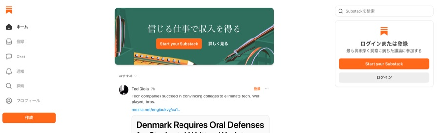
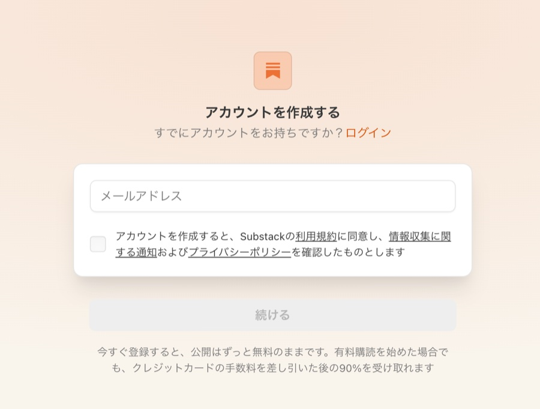
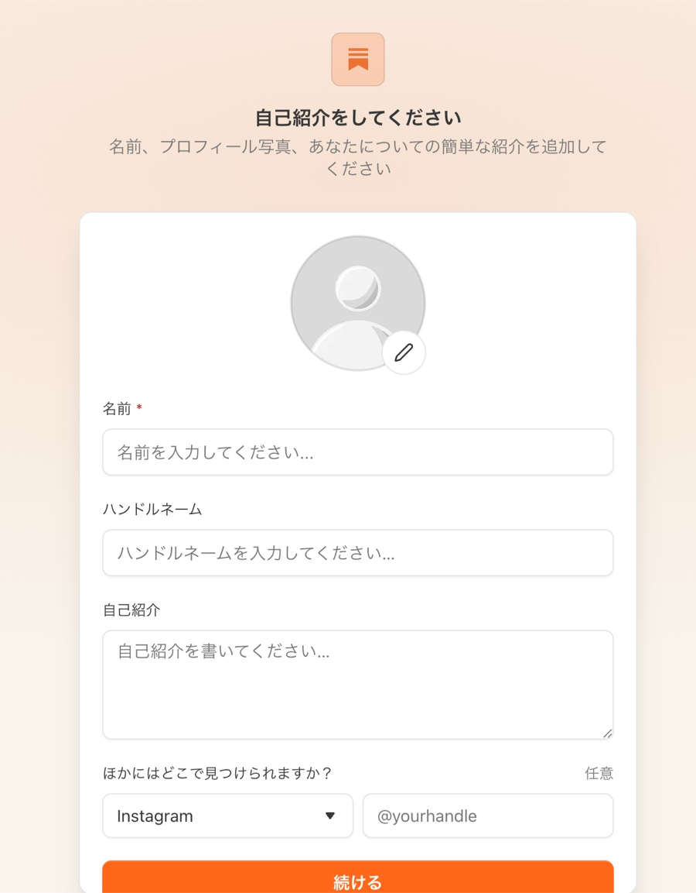
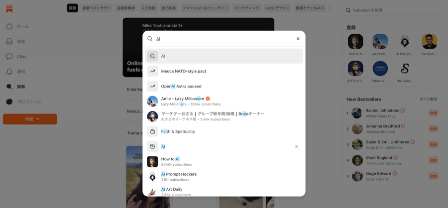
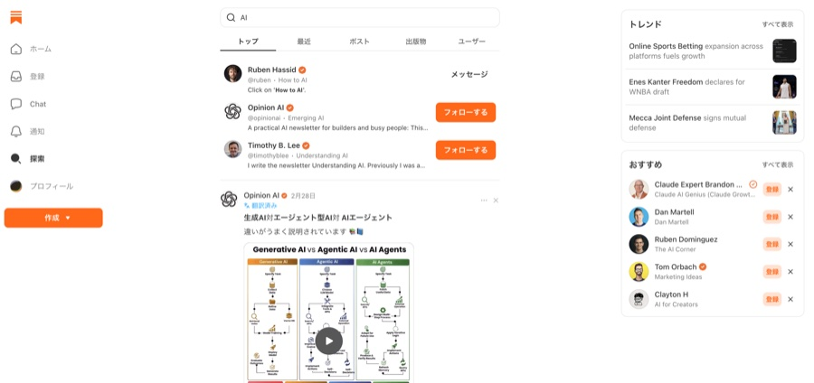
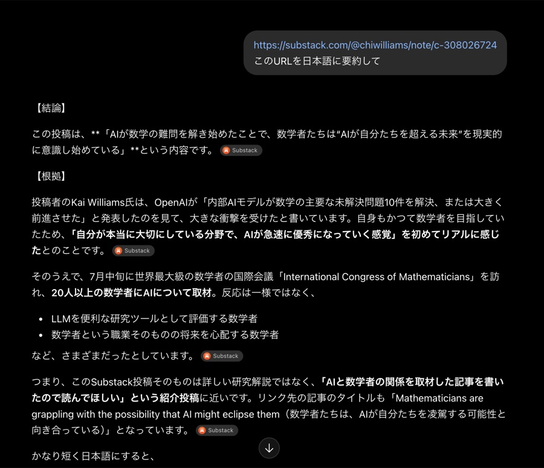
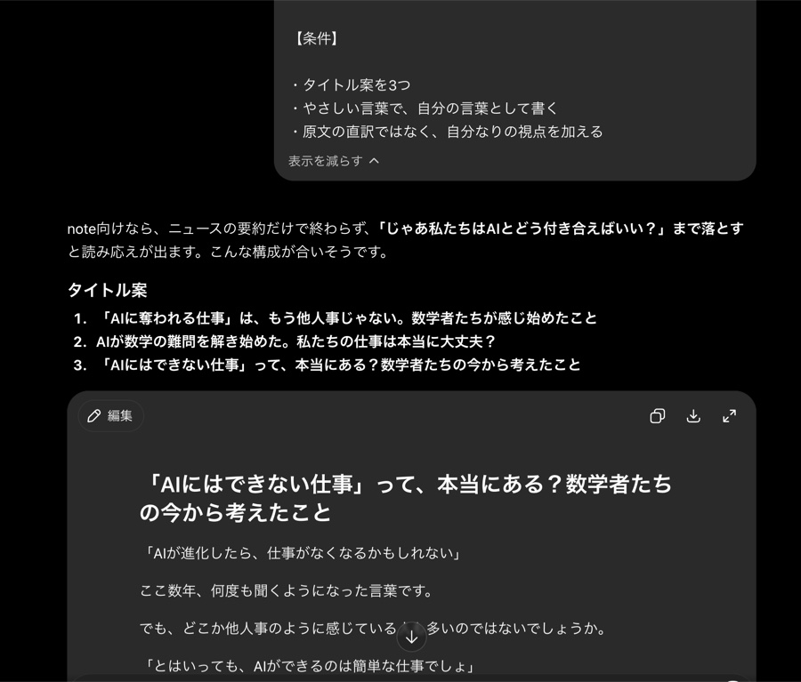

AI初心者さん向け
AIで海外記事を
ヒントにnoteを書く方法
AI初心者でも5分で始められる
実践ガイド
海外の記事をAIで日本語にして、
自分の言葉でnoteに書く。
それだけで、ネタ切れの悩みが軽くなります。
おすすめのSubstack10選
私が実際に参考にしているSubstackアカウント10選です。
英語ですが、ChatGPTを使えば日本語で内容をつかめます。
初心者はまずこの3つから
One Useful Thing
Not Boring
First 1000
AI・テクノロジートレンド
マーケティング・グロース戦略
ライティング・コンテンツビジネス
STEP 1
Substackに登録する
Substack（サブスタック）は、海外で人気の無料ニュースレターサービスです。
- Substack公式サイト（substack.com）を開く
- メールアドレスを入力して登録する
- 届いた確認メールのリンクをクリックする
- 興味のあるジャンルを選ぶ（あとから変更できます）
登録は無料。クレジットカードは不要です。



STEP 2
人気記事を探す
気になるジャンルのキーワードで記事を検索してみましょう。
AI
ChatGPT
Instagram
Productivity
選ぶ基準は、この3つです。
- 「いいね」やコメントが多い記事
- タイトルを見て内容がイメージしやすい記事
- 更新が新しい記事（1年以内が目安）


STEP 3
ChatGPTで日本語にする
気になる記事が見つかったら、ChatGPTで日本語にします。
- 記事のURLをコピーする
- ChatGPTに「このURLを日本語に要約して」と伝えて貼り付ける
- 読み込めない場合は本文をコピーして貼り付け、「日本語に訳して」とお願いする
- 気になる部分は「もっと詳しく」と追加でお願いする

補足
URLを読み込めないプランもあります。その場合は本文を直接貼り付けてください。
STEP 4
note用にリライトする
日本語にした内容をもとに、下のプロンプトでnote記事を作りましょう。
STEP4用プロンプト
STEP3の内容と一緒にコピーして、ChatGPTに送ってください。
以下の内容をもとに、note用の記事を書いてください。 【記事の要点】 （ここにSTEP3で日本語にした内容を貼り付ける） 【条件】 ・タイトル案を3つ ・やさしい言葉で、自分の言葉として書く ・原文の直訳ではなく、自分なりの視点を加える

⚠️ ここ大事
自分の言葉に置き換えることが大切です。詳しくは後半の「注意点」もご確認ください。
STEP 5
投稿前チェック
公開する前に、次の4つを確認しましょう。
- 原文をそのままコピーしていないか
- 自分の言葉が入っているか
- 日本の読者向けに表現を置き換えたか
- 事実確認をしたか
注意点
⚠️ 必ず読んでください
このガイドは、海外記事をそのまま翻訳して投稿する方法ではありません。次の4点を必ず守ってください。
-
1
アイデアや構成を参考にする
本文をそのまま訳さず、切り口や構成をヒントにする。 -
2
自分の言葉で書き直す
AIの訳文をそのまま使わず、自分の言い回しに直す。 -
3
日本向けにアレンジする
海外特有の例えや表現は、日本の読者に伝わる形に置き換える。 -
4
著作権に配慮する
出典を明記し、画像を使う場合は利用規約を確認する。